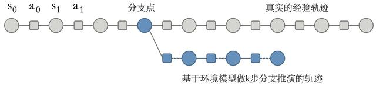
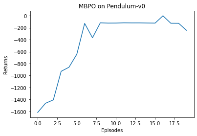

第 16 章介绍的 PETS 算法是基于模型的强化学习算法中的一种，它没有显式构建一个策略（即一个从状态到动作的映射函数）。回顾一下之前介绍过的 Dyna-Q 算法，它也是一种基于模型的强化学习算法。但是 Dyna-Q 算法中的模型只存储之前遇到的数据，只适用于表格型环境。而在连续型状态和动作的环境中，我们需要像 PETS 算法一样学习一个用神经网络表示的环境模型，此时若继续利用 Dyna 的思想，可以在任意状态和动作下用环境模型来生成一些虚拟数据，这些虚拟数据可以帮助进行策略的学习。如此，通过和模型进行交互产生额外的虚拟数据，对真实环境中样本的需求量就会减少，因此通常会比无模型的强化学习方法具有更高的采样效率。本章将介绍这样一种算法——MBPO 算法。
基于模型的策略优化 (model-based policy optimization，MBPO）算法是加州大学伯克利分校的研究员在 2019 年的 NeurIPS 会议中提出的。随即 MBPO 成为深度强化学习中最重要的基于模型的强化学习算法之一。
MBPO 算法基于以下两个关键的观察： (1) 随着环境模型的推演步数变长，模型累积的复合误差会快速增加，使得环境模型得出的结果变得很不可靠； (2) 必须要权衡推演步数增加后模型增加的误差带来的负面作用与步数增加后使得训练的策略更优的正面作用，二者的权衡决定了推演的步数。
MBPO 算法在这两个观察的基础之上，提出只使用模型来从之前访问过的真实状态开始进行较短步数的推演，而非从初始状态开始进行完整的推演。这就是 MBPO 中的分支推演（branched rollout）的概念，即在原来真实环境中采样的轨迹上面推演出新的“短分支”，如图 17-1 所示。这样做可以使模型的累积误差不至于过大，从而保证最后的采样效率和策略表现。

MBPO 与第 6 章讲解的经典的 Dyna-Q 算法十分类似。Dyna-Q 采用的无模型强化学习部分是 Q-learning，而 MBPO 采用的是 SAC。此外，MBPO 算法中环境模型的构建和 PETS 算法中一致，都使用模型集成的方式，并且其中每一个环境模型的输出都是一个高斯分布。接下来，我们来看一下 MBPO 的具体算法框架。MBPO 算法会把真实环境样本作为分支推演的起点，使用模型进行一定步数的推演，并用推演得到的模型数据用来训练模型。
分支推演的长度
首先，我们先导入一些必要的包。
import gymfrom collections import namedtupleimport itertoolsfrom itertools import countimport torchimport torch.nn as nnimport torch.nn.functional as Ffrom torch.distributions.normal import Normalimport numpy as npimport collectionsimport randomimport matplotlib.pyplot as plt
MBPO 算法使用 SAC 算法来训练策略。和 SAC 算法相比，MBPO 多用了一些模型推演得到的数据来训练策略。要想了解 SAC 方法的详细过程，读者可以阅读第 14 章对应的内容。我们将 SAC 代码直接复制到此处。
class PolicyNet(torch.nn.Module):def __init__(self, state_dim, hidden_dim, action_dim, action_bound):super(PolicyNet, self).__init__()self.fc1 = torch.nn.Linear(state_dim, hidden_dim)self.fc_mu = torch.nn.Linear(hidden_dim, action_dim)self.fc_std = torch.nn.Linear(hidden_dim, action_dim)self.action_bound = action_bounddef forward(self, x):x = F.relu(self.fc1(x))mu = self.fc_mu(x)std = F.softplus(self.fc_std(x))dist = Normal(mu, std)normal_sample = dist.rsample() # rsample()是重参数化采样函数log_prob = dist.log_prob(normal_sample)action = torch.tanh(normal_sample) # 计算tanh_normal分布的对数概率密度log_prob = log_prob - torch.log(1 - torch.tanh(action).pow(2) + 1e-7)action = action * self.action_boundreturn action, log_probclass QValueNet(torch.nn.Module):def __init__(self, state_dim, hidden_dim, action_dim):super(QValueNet, self).__init__()self.fc1 = torch.nn.Linear(state_dim + action_dim, hidden_dim)self.fc2 = torch.nn.Linear(hidden_dim, 1)def forward(self, x, a):cat = torch.cat([x, a], dim=1) # 拼接状态和动作x = F.relu(self.fc1(cat))return self.fc2(x)device = torch.device("cuda") if torch.cuda.is_available() else torch.device("cpu")class SAC:''' 处理连续动作的SAC算法 '''def __init__(self, state_dim, hidden_dim, action_dim, action_bound,actor_lr, critic_lr, alpha_lr, target_entropy, tau, gamma):self.actor = PolicyNet(state_dim, hidden_dim, action_dim,action_bound).to(device) # 策略网络# 第一个Q网络self.critic_1 = QValueNet(state_dim, hidden_dim, action_dim).to(device)# 第二个Q网络self.critic_2 = QValueNet(state_dim, hidden_dim, action_dim).to(device)self.target_critic_1 = QValueNet(state_dim, hidden_dim,action_dim).to(device) # 第一个目标Q网络self.target_critic_2 = QValueNet(state_dim, hidden_dim,action_dim).to(device) # 第二个目标Q网络# 令目标Q网络的初始参数和Q网络一样self.target_critic_1.load_state_dict(self.critic_1.state_dict())self.target_critic_2.load_state_dict(self.critic_2.state_dict())self.actor_optimizer = torch.optim.Adam(self.actor.parameters(),lr=actor_lr)self.critic_1_optimizer = torch.optim.Adam(self.critic_1.parameters(),lr=critic_lr)self.critic_2_optimizer = torch.optim.Adam(self.critic_2.parameters(),lr=critic_lr)# 使用alpha的log值,可以使训练结果比较稳定self.log_alpha = torch.tensor(np.log(0.01), dtype=torch.float)self.log_alpha.requires_grad = True # 可以对alpha求梯度self.log_alpha_optimizer = torch.optim.Adam([self.log_alpha],lr=alpha_lr)self.target_entropy = target_entropy # 目标熵的大小self.gamma = gammaself.tau = taudef take_action(self, state):state = torch.tensor([state], dtype=torch.float).to(device)action = self.actor(state)[0]return [action.item()]def calc_target(self, rewards, next_states, dones): # 计算目标Q值next_actions, log_prob = self.actor(next_states)entropy = -log_probq1_value = self.target_critic_1(next_states, next_actions)q2_value = self.target_critic_2(next_states, next_actions)next_value = torch.min(q1_value,q2_value) + self.log_alpha.exp() * entropytd_target = rewards + self.gamma * next_value * (1 - dones)return td_targetdef soft_update(self, net, target_net):for param_target, param in zip(target_net.parameters(),net.parameters()):param_target.data.copy_(param_target.data * (1.0 - self.tau) +param.data * self.tau)def update(self, transition_dict):states = torch.tensor(transition_dict['states'],dtype=torch.float).to(device)actions = torch.tensor(transition_dict['actions'],dtype=torch.float).view(-1, 1).to(device)rewards = torch.tensor(transition_dict['rewards'],dtype=torch.float).view(-1, 1).to(device)next_states = torch.tensor(transition_dict['next_states'],dtype=torch.float).to(device)dones = torch.tensor(transition_dict['dones'],dtype=torch.float).view(-1, 1).to(device)rewards = (rewards + 8.0) / 8.0 # 对倒立摆环境的奖励进行重塑# 更新两个Q网络td_target = self.calc_target(rewards, next_states, dones)critic_1_loss = torch.mean(F.mse_loss(self.critic_1(states, actions), td_target.detach()))critic_2_loss = torch.mean(F.mse_loss(self.critic_2(states, actions), td_target.detach()))self.critic_1_optimizer.zero_grad()critic_1_loss.backward()self.critic_1_optimizer.step()self.critic_2_optimizer.zero_grad()critic_2_loss.backward()self.critic_2_optimizer.step()# 更新策略网络new_actions, log_prob = self.actor(states)entropy = -log_probq1_value = self.critic_1(states, new_actions)q2_value = self.critic_2(states, new_actions)actor_loss = torch.mean(-self.log_alpha.exp() * entropy -torch.min(q1_value, q2_value))self.actor_optimizer.zero_grad()actor_loss.backward()self.actor_optimizer.step()# 更新alpha值alpha_loss = torch.mean((entropy - self.target_entropy).detach() * self.log_alpha.exp())self.log_alpha_optimizer.zero_grad()alpha_loss.backward()self.log_alpha_optimizer.step()self.soft_update(self.critic_1, self.target_critic_1)self.soft_update(self.critic_2, self.target_critic_2)
接下来定义环境模型，注意这里的环境模型和 PETS 算法中的环境模型是一样的，由多个高斯分布策略的集成来构建。我们也沿用 PETS 算法中的模型构建代码。
class Swish(nn.Module):''' Swish激活函数 '''def __init__(self):super(Swish, self).__init__()def forward(self, x):return x * torch.sigmoid(x)def init_weights(m):''' 初始化模型权重 '''def truncated_normal_init(t, mean=0.0, std=0.01):torch.nn.init.normal_(t, mean=mean, std=std)while True:cond = (t < mean - 2 * std) | (t > mean + 2 * std)if not torch.sum(cond):breakt = torch.where(cond,torch.nn.init.normal_(torch.ones(t.shape, device=device),mean=mean,std=std), t)return tif type(m) == nn.Linear or isinstance(m, FCLayer):truncated_normal_init(m.weight, std=1 / (2 * np.sqrt(m._input_dim)))m.bias.data.fill_(0.0)class FCLayer(nn.Module):''' 集成之后的全连接层 '''def __init__(self, input_dim, output_dim, ensemble_size, activation):super(FCLayer, self).__init__()self._input_dim, self._output_dim = input_dim, output_dimself.weight = nn.Parameter(torch.Tensor(ensemble_size, input_dim, output_dim).to(device))self._activation = activationself.bias = nn.Parameter(torch.Tensor(ensemble_size, output_dim).to(device))def forward(self, x):return self._activation(torch.add(torch.bmm(x, self.weight), self.bias[:, None, :]))
接着，我们就可以定义集成模型了，其中就会用到刚刚定义的全连接层。
class EnsembleModel(nn.Module):''' 环境模型集成 '''def __init__(self,state_dim,action_dim,model_alpha,ensemble_size=5,learning_rate=1e-3):super(EnsembleModel, self).__init__()# 输出包括均值和方差,因此是状态与奖励维度之和的两倍self._output_dim = (state_dim + 1) * 2self._model_alpha = model_alpha # 模型损失函数中加权时的权重self._max_logvar = nn.Parameter((torch.ones((1, self._output_dim // 2)).float() / 2).to(device),requires_grad=False)self._min_logvar = nn.Parameter((-torch.ones((1, self._output_dim // 2)).float() * 10).to(device),requires_grad=False)self.layer1 = FCLayer(state_dim + action_dim, 200, ensemble_size,Swish())self.layer2 = FCLayer(200, 200, ensemble_size, Swish())self.layer3 = FCLayer(200, 200, ensemble_size, Swish())self.layer4 = FCLayer(200, 200, ensemble_size, Swish())self.layer5 = FCLayer(200, self._output_dim, ensemble_size,nn.Identity())self.apply(init_weights) # 初始化环境模型中的参数self.optimizer = torch.optim.Adam(self.parameters(), lr=learning_rate)def forward(self, x, return_log_var=False):ret = self.layer5(self.layer4(self.layer3(self.layer2(self.layer1(x)))))mean = ret[:, :, :self._output_dim // 2]# 在PETS算法中,将方差控制在最小值和最大值之间logvar = self._max_logvar - F.softplus(self._max_logvar - ret[:, :, self._output_dim // 2:])logvar = self._min_logvar + F.softplus(logvar - self._min_logvar)return mean, logvar if return_log_var else torch.exp(logvar)def loss(self, mean, logvar, labels, use_var_loss=True):inverse_var = torch.exp(-logvar)if use_var_loss:mse_loss = torch.mean(torch.mean(torch.pow(mean - labels, 2) *inverse_var,dim=-1),dim=-1)var_loss = torch.mean(torch.mean(logvar, dim=-1), dim=-1)total_loss = torch.sum(mse_loss) + torch.sum(var_loss)else:mse_loss = torch.mean(torch.pow(mean - labels, 2), dim=(1, 2))total_loss = torch.sum(mse_loss)return total_loss, mse_lossdef train(self, loss):self.optimizer.zero_grad()loss += self._model_alpha * torch.sum(self._max_logvar) - self._model_alpha * torch.sum(self._min_logvar)loss.backward()self.optimizer.step()class EnsembleDynamicsModel:''' 环境模型集成,加入精细化的训练 '''def __init__(self, state_dim, action_dim, model_alpha=0.01, num_network=5):self._num_network = num_networkself._state_dim, self._action_dim = state_dim, action_dimself.model = EnsembleModel(state_dim,action_dim,model_alpha,ensemble_size=num_network)self._epoch_since_last_update = 0def train(self,inputs,labels,batch_size=64,holdout_ratio=0.1,max_iter=20):# 设置训练集与验证集permutation = np.random.permutation(inputs.shape[0])inputs, labels = inputs[permutation], labels[permutation]num_holdout = int(inputs.shape[0] * holdout_ratio)train_inputs, train_labels = inputs[num_holdout:], labels[num_holdout:]holdout_inputs, holdout_labels = inputs[:num_holdout], labels[:num_holdout]holdout_inputs = torch.from_numpy(holdout_inputs).float().to(device)holdout_labels = torch.from_numpy(holdout_labels).float().to(device)holdout_inputs = holdout_inputs[None, :, :].repeat([self._num_network, 1, 1])holdout_labels = holdout_labels[None, :, :].repeat([self._num_network, 1, 1])# 保留最好的结果self._snapshots = {i: (None, 1e10) for i in range(self._num_network)}for epoch in itertools.count():# 定义每一个网络的训练数据train_index = np.vstack([np.random.permutation(train_inputs.shape[0])for _ in range(self._num_network)])# 所有真实数据都用来训练for batch_start_pos in range(0, train_inputs.shape[0], batch_size):batch_index = train_index[:, batch_start_pos:batch_start_pos +batch_size]train_input = torch.from_numpy(train_inputs[batch_index]).float().to(device)train_label = torch.from_numpy(train_labels[batch_index]).float().to(device)mean, logvar = self.model(train_input, return_log_var=True)loss, _ = self.model.loss(mean, logvar, train_label)self.model.train(loss)with torch.no_grad():mean, logvar = self.model(holdout_inputs, return_log_var=True)_, holdout_losses = self.model.loss(mean,logvar,holdout_labels,use_var_loss=False)holdout_losses = holdout_losses.cpu()break_condition = self._save_best(epoch, holdout_losses)if break_condition or epoch > max_iter: # 结束训练breakdef _save_best(self, epoch, losses, threshold=0.1):updated = Falsefor i in range(len(losses)):current = losses[i]_, best = self._snapshots[i]improvement = (best - current) / bestif improvement > threshold:self._snapshots[i] = (epoch, current)updated = Trueself._epoch_since_last_update = 0 if updated else self._epoch_since_last_update + 1return self._epoch_since_last_update > 5def predict(self, inputs, batch_size=64):inputs = np.tile(inputs, (self._num_network, 1, 1))inputs = torch.tensor(inputs, dtype=torch.float).to(device)mean, var = self.model(inputs, return_log_var=False)return mean.detach().cpu().numpy(), var.detach().cpu().numpy()class FakeEnv:def __init__(self, model):self.model = modeldef step(self, obs, act):inputs = np.concatenate((obs, act), axis=-1)ensemble_model_means, ensemble_model_vars = self.model.predict(inputs)ensemble_model_means[:, :, 1:] += obsensemble_model_stds = np.sqrt(ensemble_model_vars)ensemble_samples = ensemble_model_means + np.random.normal(size=ensemble_model_means.shape) * ensemble_model_stdsnum_models, batch_size, _ = ensemble_model_means.shapemodels_to_use = np.random.choice([i for i in range(self.model._num_network)], size=batch_size)batch_inds = np.arange(0, batch_size)samples = ensemble_samples[models_to_use, batch_inds]rewards, next_obs = samples[:, :1][0][0], samples[:, 1:][0]return rewards, next_obs
最后，我们来实现 MBPO 算法的具体流程。
class MBPO:def __init__(self, env, agent, fake_env, env_pool, model_pool,rollout_length, rollout_batch_size, real_ratio, num_episode):self.env = envself.agent = agentself.fake_env = fake_envself.env_pool = env_poolself.model_pool = model_poolself.rollout_length = rollout_lengthself.rollout_batch_size = rollout_batch_sizeself.real_ratio = real_ratioself.num_episode = num_episodedef rollout_model(self):observations, _, _, _, _ = self.env_pool.sample(self.rollout_batch_size)for obs in observations:for i in range(self.rollout_length):action = self.agent.take_action(obs)reward, next_obs = self.fake_env.step(obs, action)self.model_pool.add(obs, action, reward, next_obs, False)obs = next_obsdef update_agent(self, policy_train_batch_size=64):env_batch_size = int(policy_train_batch_size * self.real_ratio)model_batch_size = policy_train_batch_size - env_batch_sizefor epoch in range(10):env_obs, env_action, env_reward, env_next_obs, env_done = self.env_pool.sample(env_batch_size)if self.model_pool.size() > 0:model_obs, model_action, model_reward, model_next_obs, model_done = self.model_pool.sample(model_batch_size)obs = np.concatenate((env_obs, model_obs), axis=0)action = np.concatenate((env_action, model_action), axis=0)next_obs = np.concatenate((env_next_obs, model_next_obs),axis=0)reward = np.concatenate((env_reward, model_reward), axis=0)done = np.concatenate((env_done, model_done), axis=0)else:obs, action, next_obs, reward, done = env_obs, env_action, env_next_obs, env_reward, env_donetransition_dict = {'states': obs,'actions': action,'next_states': next_obs,'rewards': reward,'dones': done}self.agent.update(transition_dict)def train_model(self):obs, action, reward, next_obs, done = self.env_pool.return_all_samples()inputs = np.concatenate((obs, action), axis=-1)reward = np.array(reward)labels = np.concatenate((np.reshape(reward, (reward.shape[0], -1)), next_obs - obs),axis=-1)self.fake_env.model.train(inputs, labels)def explore(self):obs, done, episode_return = self.env.reset(), False, 0while not done:action = self.agent.take_action(obs)next_obs, reward, done, _ = self.env.step(action)self.env_pool.add(obs, action, reward, next_obs, done)obs = next_obsepisode_return += rewardreturn episode_returndef train(self):return_list = []explore_return = self.explore() # 随机探索采取数据print('episode: 1, return: %d' % explore_return)return_list.append(explore_return)for i_episode in range(self.num_episode - 1):obs, done, episode_return = self.env.reset(), False, 0step = 0while not done:if step % 50 == 0:self.train_model()self.rollout_model()action = self.agent.take_action(obs)next_obs, reward, done, _ = self.env.step(action)self.env_pool.add(obs, action, reward, next_obs, done)obs = next_obsepisode_return += rewardself.update_agent()step += 1return_list.append(episode_return)print('episode: %d, return: %d' % (i_episode + 2, episode_return))return return_listclass ReplayBuffer:def __init__(self, capacity):self.buffer = collections.deque(maxlen=capacity)def add(self, state, action, reward, next_state, done):self.buffer.append((state, action, reward, next_state, done))def size(self):return len(self.buffer)def sample(self, batch_size):if batch_size > len(self.buffer):return self.return_all_samples()else:transitions = random.sample(self.buffer, batch_size)state, action, reward, next_state, done = zip(*transitions)return np.array(state), action, reward, np.array(next_state), donedef return_all_samples(self):all_transitions = list(self.buffer)state, action, reward, next_state, done = zip(*all_transitions)return np.array(state), action, reward, np.array(next_state), done
对于不同的环境，我们需要设置不同的参数。这里以 OpenAI Gym 中的 Pendulum-v0 环境为例，给出一组效果较为不错的参数。读者可以试着自己调节参数，观察调节后的效果。
real_ratio = 0.5env_name = 'Pendulum-v0'env = gym.make(env_name)num_episodes = 20actor_lr = 5e-4critic_lr = 5e-3alpha_lr = 1e-3hidden_dim = 128gamma = 0.98tau = 0.005 # 软更新参数buffer_size = 10000target_entropy = -1model_alpha = 0.01 # 模型损失函数中的加权权重state_dim = env.observation_space.shape[0]action_dim = env.action_space.shape[0]action_bound = env.action_space.high[0] # 动作最大值rollout_batch_size = 1000rollout_length = 1 # 推演长度k,推荐更多尝试model_pool_size = rollout_batch_size * rollout_lengthagent = SAC(state_dim, hidden_dim, action_dim, action_bound, actor_lr,critic_lr, alpha_lr, target_entropy, tau, gamma)model = EnsembleDynamicsModel(state_dim, action_dim, model_alpha)fake_env = FakeEnv(model)env_pool = ReplayBuffer(buffer_size)model_pool = ReplayBuffer(model_pool_size)mbpo = MBPO(env, agent, fake_env, env_pool, model_pool, rollout_length,rollout_batch_size, real_ratio, num_episodes)return_list = mbpo.train()episodes_list = list(range(len(return_list)))plt.plot(episodes_list, return_list)plt.xlabel('Episodes')plt.ylabel('Returns')plt.title('MBPO on {}'.format(env_name))plt.show()
episode: 1, return: -1617episode: 2, return: -1463episode: 3, return: -1407episode: 4, return: -929episode: 5, return: -860episode: 6, return: -643episode: 7, return: -128episode: 8, return: -368episode: 9, return: -118episode: 10, return: -123episode: 11, return: -122episode: 12, return: -118episode: 13, return: -119episode: 14, return: -119episode: 15, return: -121episode: 16, return: -123episode: 17, return: 0episode: 18, return: -125episode: 19, return: -126episode: 20, return: -243

可以看到，相比无模型的强化学习算法，基于模型的方法 MBPO 在样本效率上要高很多。虽然这里的效果可能不如 16.3 节提到的 PETS 算法优秀，但是在许多更加复杂的环境中（如 Hopper 和 HalfCheetah），MBPO 的表现远远好于 PETS 算法。
MBPO 算法是一种前沿的基于模型的强化学习算法，它提出了一个重要的概念——分支推演。在各种复杂的环境中，作者验证了 MBPO 的效果超过了之前基于模型的方法。MBPO 对于基于模型的强化学习的发展起着重要的作用，不少之后的工作都是在此基础上进行的。
除了算法的有效性，MBPO 的重要贡献还包括它给出了关于分支推演步数与模型误差、策略偏移程度之间的定量关系，进而阐明了什么时候我们可以相信并使用环境模型，什么样的环境导出的最优分支推演步数为 0，进而建议不使用环境模型。相应的理论分析在 17.5 节给出。
基于模型的方法往往是在环境模型中提升策略的性能，但这并不能保证在真实环境中策略性能也有所提升。因此，我们希望模型环境和真实环境中的结果的差距有一定的限制，具体可形式化为：
其中，
在 MBPO 中，根据泛化误差和分布偏移估计出这样一个下界：
其中,
在上面的公式里，如果模型泛化误差很大，就可能不存在一个使得推演误差
如果我们使用当前策略
并且对其进行线性近似：
结合上
其中，
在上式中可以看到，对于
MBPO 论文中展示了在主流的机器人运动环境 Mojoco 的典型场景中，
[1] JANNER M, FU J, ZHANG M, et al. When to trust your model: model-based policy optimization [J]. Advances in neural information processing systems 2019, 32: 12519-12530.